Luis M. González
Con base en (Secretaría de Salud - DGIS, 16 de julio de 2026)
| Nivel de atención: | SEGUNDO NIVEL |
| Tipología: | HOSPITAL GENERAL |
| Subtipología: | NO ESPECIFICADO |
| Tipo de establecimiento: | HOSPITALIZACIÓN |
| Estrato: | URBANO |
| Estatus: | FUERA DE OPERACIÓN |
| Región: | SUROESTE |
| Entidad: | GUERRERO |
| Municipio: | ACAPULCO DE JUÁREZ |
| Localidad: | ACAPULCO DE JUÁREZ |
| Coordenadas: | 16.8615, -99.9013 |
| Domicilio: | CALLE VALLARTA ESQUINA NUEVO LEON No. SIN NÚMERO |
| COLONIA PROGRESO | |
| ACAPULCO DE JUÁREZ, GRO | |
| CP 39350 | |
| Fecha de inicio de operación: | 1959-11-01 |
| Propiedad del inmueble: | None |
| Último movimiento: | BAJA |
| Fecha del último movimiento: | 2025-09-30 |
| Motivo de baja: | POR DAÑO ESTRUCTURAL |
| Fecha efectiva de baja: | 2025-06-17 |
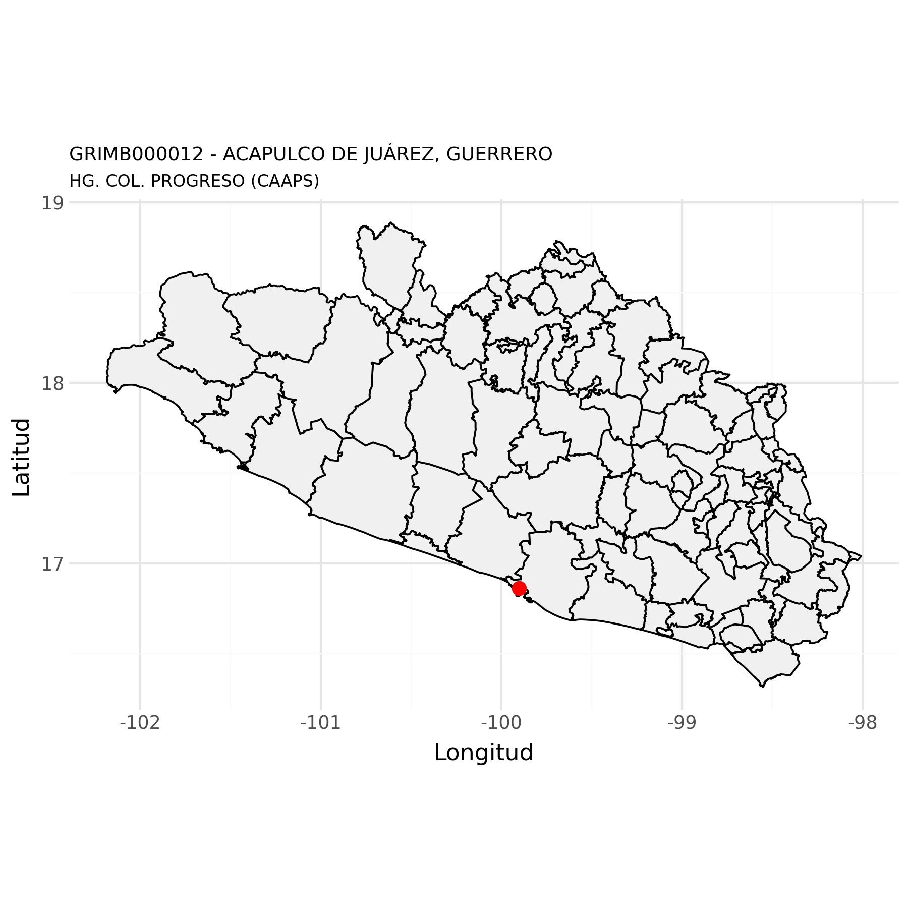
Con base en (Secretaría de Salud - DGIS, 15 de julio de 2026a)
| clues | Año | Egresos |
|---|---|---|
| GRIMB000012 | 2021 | 2356 |
| GRIMB000012 | 2022 | 1950 |
| GRIMB000012 | 2023 | 1509 |
| GRIMB000012 | 2024 | 891 |
| GRIMB000012 | 2025 | 502 |
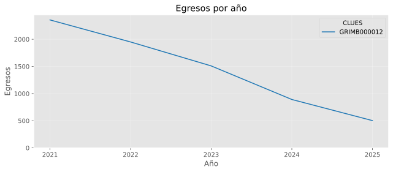
| Posición | Afección principal | Egresos |
|---|---|---|
| 1 | PARTO ÚNICO ESPONTÁNEO, SIN OTRA ESPECIFICACIÓN | 165 |
| 2 | PARTO POR CESÁREA ELECTIVA | 89 |
| 3 | OTROS PARTOS ÚNICOS POR CESÁREA | 78 |
| 4 | FALSO TRABAJO DE PARTO ANTES DE LAS 37 SEMANAS COMPLETAS DE GESTACIÓN | 37 |
| 5 | ABORTO NO ESPECIFICADO INCOMPLETO, SIN COMPLICACIÓN | 37 |
| 6 | AMENAZA DE ABORTO | 14 |
| 7 | ABORTO RETENIDO | 10 |
| 8 | ESTERILIZACIÓN | 7 |
| 9 | TAQUIPNEA TRANSITORIA DEL RECIÉN NACIDO | 5 |
| 10 | ICTERICIA NEONATAL ASOCIADA CON EL PARTO ANTES DE TÉRMINO | 5 |
| 11 | COMPLICACIÓN MECÁNICA DE DISPOSITIVO ANTICONCEPTIVO INTRAUTERINO | 4 |
| 12 | DIABETES MELLITUS TIPO 2, CON CETOACIDOSIS | 3 |
| 13 | ANEMIA QUE COMPLICA EL EMBARAZO, EL PARTO Y EL PUERPERIO | 3 |
| 14 | ABORTO ESPONTÁNEO COMPLETO O NO ESPECIFICADO, SIN COMPLICACIÓN | 2 |
| 15 | ABORTO NO ESPECIFICADO COMPLETO O NO ESPECIFICADO, SIN COMPLICACIÓN | 2 |
| 16 | ATENCIÓN MATERNA POR OTROS PROBLEMAS FETALES ESPECIFICADOS | 2 |
| 17 | DEHISCENCIA DE SUTURA DE CESÁREA | 2 |
| 18 | DEHISCENCIA DE SUTURA OBSTÉTRICA PERINEAL | 2 |
| 19 | INTOLERANCIA A LA LACTOSA, NO ESPECIFICADA | 2 |
| 20 | LEIOMIOMA DEL ÚTERO, SIN OTRA ESPECIFICACIÓN | 2 |
| 21 | OTROS | 31 |
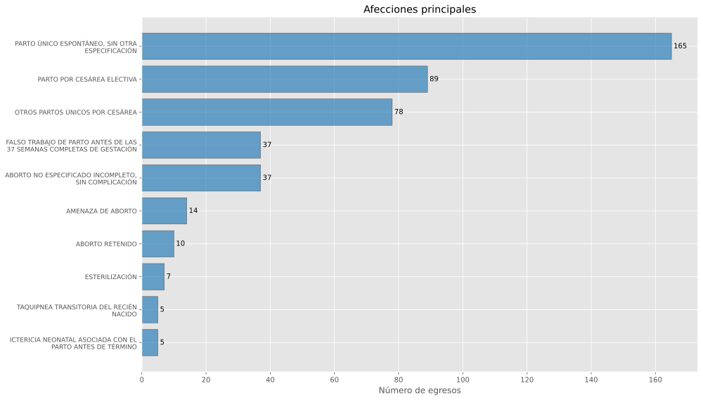
| Posición | Servicio de ingreso | Egresos |
|---|---|---|
| 1 | GINECOLOGÍA | 482 |
| 2 | UNIDAD DE CUIDADOS INTERMEDIOS NEONATALES | 17 |
| 3 | MEDICINA INTERNA | 2 |
| 4 | NO APLICA | 1 |
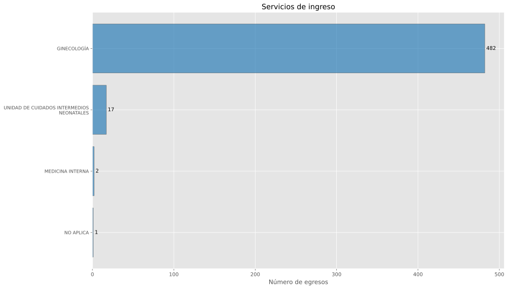
| Posición | Servicio de egreso | Egresos |
|---|---|---|
| 1 | GINECOLOGÍA | 482 |
| 2 | UNIDAD DE CUIDADOS INTERMEDIOS NEONATALES | 17 |
| 3 | MEDICINA INTERNA | 3 |
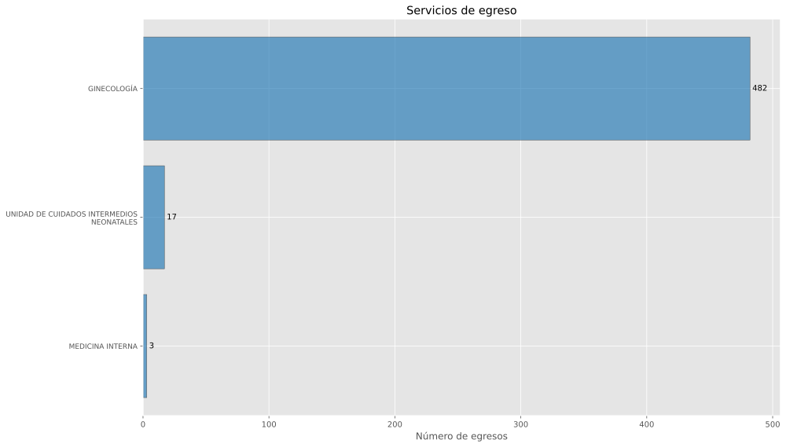
| Posición | Procedencia | Egresos |
|---|---|---|
| 1 | URGENCIAS | 451 |
| 2 | REFERIDO | 26 |
| 3 | CUNERO PATOLÓGICO | 16 |
| 4 | CONSULTA EXTERNA | 9 |
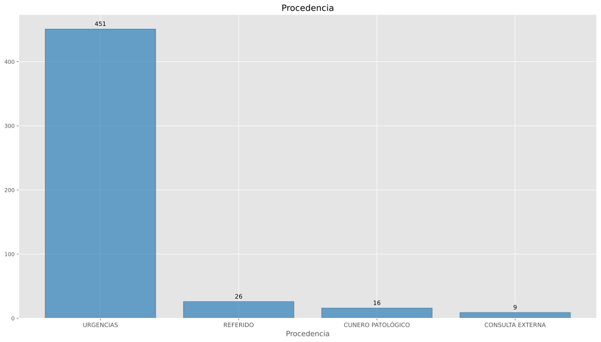
| Posición | Motivo de egreso | Egresos |
|---|---|---|
| 1 | MEJORÍA | 478 |
| 2 | VOLUNTARIO | 15 |
| 3 | TRASLADO A OTRA UNIDAD | 9 |
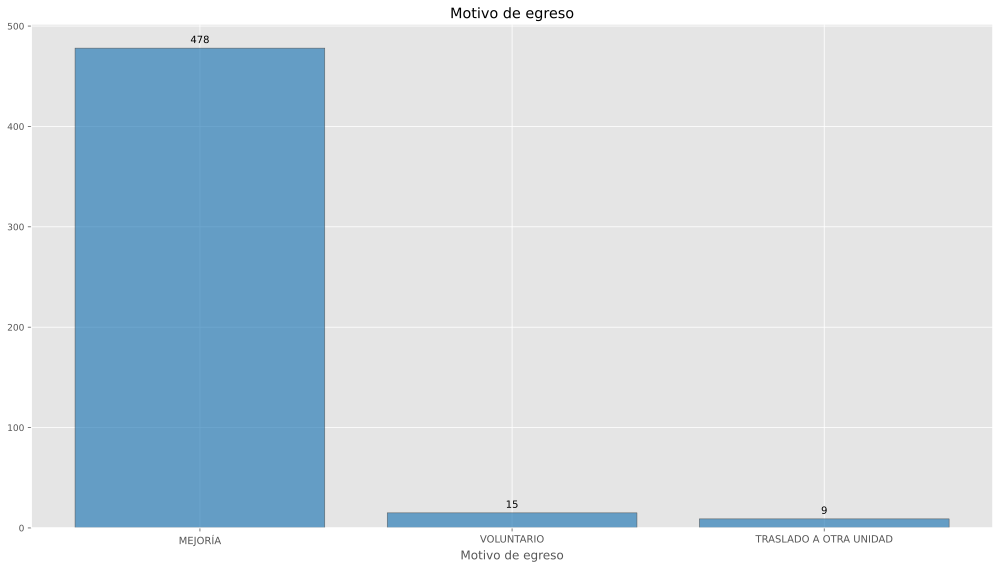
| Posición | Procedimiento quirúrgico | Egresos |
|---|---|---|
| 1 | CESÁREA CLÁSICA BAJA | 167 |
| 2 | EPISIOTOMÍA | 86 |
| 3 | OTRA DESTRUCCIÓN U OCLUSIÓN BILATERAL DE LAS TROMPAS DE FALOPIO | 75 |
| 4 | SUTURA DE DESGARRO DE LA VULVA O EL PERINEO ACTUAL | 55 |
| 5 | DILATACIÓN Y LEGRADO PARA TERMINACIÓN DEL EMBARAZO | 40 |
| 6 | OTRA LIGADURA Y SECCIÓN BILATERAL DE LAS TROMPAS DE FALOPIO | 12 |
| 7 | LEGRADO POR ASPIRACIÓN DEL ÚTERO DESPUÉS DE PARTO O ABORTO | 10 |
| 8 | REPARACIÓN DE OTRO DESGARRO OBSTÉTRICO ACTUAL | 10 |
| 9 | EXPLORACIÓN MANUAL DE LA CAVIDAD UTERINA, DESPUÉS DEL PARTO | 4 |
| 10 | OTRA EXCISIÓN DE TEJIDO BLANDO | 3 |
| 11 | EXTIRPACIÓN DE QUISTE O SENO PILONIDAL | 3 |
| 12 | CIERRE DE PIEL Y TEJIDO SUBCUTÁNEO DE OTROS SITIOS | 3 |
| 13 | OTRA HISTERECTOMÍA TOTAL ABDOMINAL Y LA NO ESPECIFICADA | 2 |
| 14 | OTRA EXCISIÓN O DESTRUCCIÓN DE LESIÓN DEL ÚTERO | 1 |
| 15 | LAPAROTOMÍA EXPLORADORA | 1 |
| 16 | OTRA REPARACIÓN DE TROMPA DE FALOPIO | 1 |
| 17 | OTRA VAGINOTOMÍA | 1 |
| 18 | SALPINGOTOMÍA | 1 |
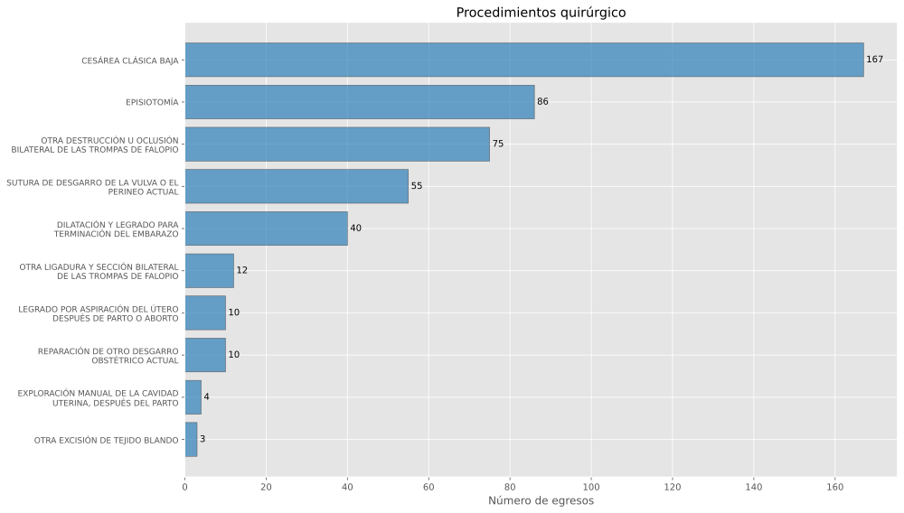
| Posición | Procedimiento terapéutico | Egresos |
|---|---|---|
| 1 | OTRO PARTO ASISTIDO MANUALMENTE | 164 |
| 2 | INYECCIÓN DE ESTEROIDE | 147 |
| 3 | INYECCIÓN DE OTRA SUSTANCIA ANTI-INFECCIOSA | 70 |
| 4 | INSERCIÓN DE DISPOSITIVO ANTICONCEPTIVO INTRAUTERINO | 34 |
| 5 | OTRA FOTOTERAPIA | 10 |
| 6 | TRANSFUSIÓN DE OTRO SUERO | 4 |
| 7 | OTRO ENRIQUECIMIENTO POR OXÍGENO | 4 |
| 8 | INFUSIÓN PARENTERAL DE SUSTANCIAS NUTRITIVAS CONCENTRADAS | 3 |
| 9 | OTRA IRRIGACIÓN DE HERIDA | 3 |
| 10 | OTRA TRANSFUSIÓN DE SANGRE ENTERA | 2 |
| 11 | EXTRACCIÓN DE DISPOSITIVO ANTICONCEPTIVO INTRAUTERINO | 2 |
| 12 | TRANSFUSIÓN DE OTRA SUSTANCIA | 1 |
| 13 | OTRA VACUNACIÓN E INOCULACIÓN | 1 |
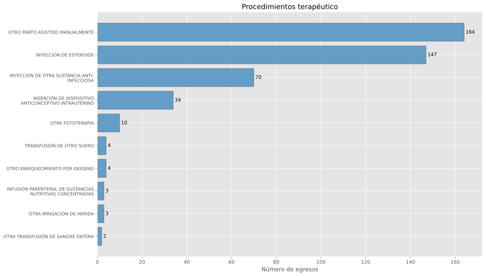
| Posición | Procedimiento de diagnóstico | Egresos |
|---|---|---|
| 1 | EXAMEN MICROSCÓPICO DE SANGRE. OTRO EXAMEN MICROSCÓPICO | 7 |
| 2 | ULTRASONOGRAFÍA DIAGNÓSTICA DEL ÚTERO GRÁVIDO | 5 |
| 3 | OTROS PROCEDIMIENTOS DIAGNÓSTICOS SOBRE LOS OVARIOS | 2 |
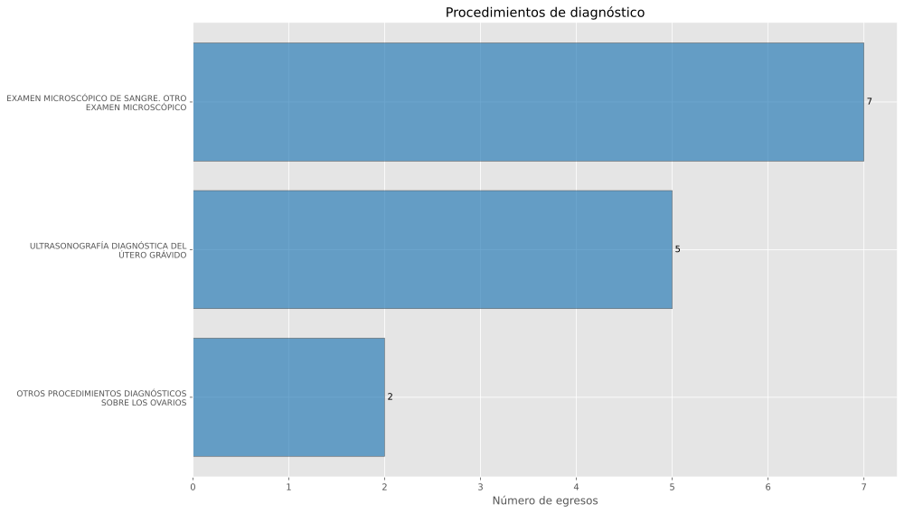
Con base en (Secretaría de Salud - DGIS, 15 de julio de 2026b)
| clues | Año | Urgencias |
|---|---|---|
| GRIMB000012 | 2023 | 3709 |
| GRIMB000012 | 2024 | 2793 |
| GRIMB000012 | 2025 | 1590 |
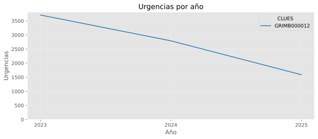
| Posición | Afección principal | Urgencias |
|---|---|---|
| 1 | SUPERVISIÓN DE PRIMER EMBARAZO NORMAL | 824 |
| 2 | SUPERVISIÓN DE OTROS EMBARAZOS NORMALES | 389 |
| 3 | AMENAZA DE ABORTO | 32 |
| 4 | ATENCIÓN MATERNA POR CICATRIZ UTERINA DEBIDA A CIRUGÍA PREVIA | 31 |
| 5 | FALSO TRABAJO DE PARTO ANTES DE LAS 37 SEMANAS COMPLETAS DE GESTACIÓN | 28 |
| 6 | ABORTO NO ESPECIFICADO INCOMPLETO, SIN COMPLICACIÓN | 28 |
| 7 | RUPTURA PREMATURA DE LAS MEMBRANAS, E INICIO DEL TRABAJO DE PARTO DENTRO DE LAS 24 HORAS | 21 |
| 8 | SEGUIMIENTO POSTPARTO, DE RUTINA | 17 |
| 9 | ABORTO RETENIDO | 12 |
| 10 | ABORTO NO ESPECIFICADO COMPLETO O NO ESPECIFICADO, SIN COMPLICACIÓN | 10 |
| 11 | ATENCIÓN MATERNA POR OTROS PROBLEMAS FETALES ESPECIFICADOS | 10 |
| 12 | HIPERTENSIÓN PREEXISTENTE NO ESPECIFICADA, QUE COMPLICA EL EMBARAZO, EL PARTO Y EL PUERPERIO | 10 |
| 13 | SUPERVISIÓN DE OTROS EMBARAZOS DE ALTO RIESGO | 8 |
| 14 | ATENCIÓN MATERNA POR DESPROPORCIÓN DEBIDA A FETO DEMASIADO GRANDE | 7 |
| 15 | AMENORREA, SIN OTRA ESPECIFICACIÓN | 7 |
| 16 | INFECCIÓN NO ESPECIFICADA DE LAS VÍAS URINARIAS EN EL EMBARAZO | 7 |
| 17 | TRABAJO DE PARTO Y PARTO COMPLICADOS POR ANOMALÍA DE LA FRECUENCIA CARDÍACA FETAL | 7 |
| 18 | EFECTO TÓXICO DEL VENENO DE ESCORPIÓN | 6 |
| 19 | PRODUCTO ANORMAL DE LA CONCEPCIÓN, NO ESPECIFICADO | 6 |
| 20 | OTRAS INFECCIONES CON UN MODO DE TRANSMISIÓN PREDOMINANTEMENTE SEXUAL QUE COMPLICAN EL EMBARAZO, PARTO Y PUERPERIO | 5 |
| 21 | OTROS | 125 |
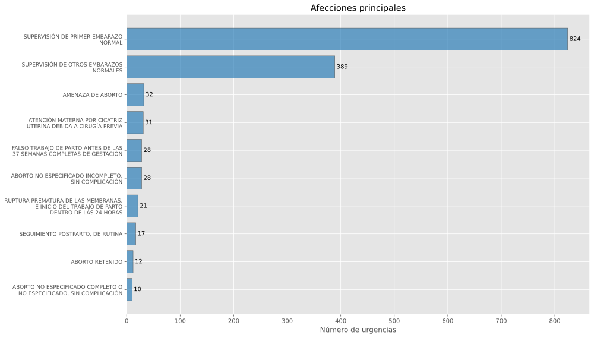
| Posición | Motivo de urgencia | Urgencias |
|---|---|---|
| 1 | GINECO-OBSTÉTRICA | 1189 |
| 2 | MÉDICA | 397 |
| 3 | PEDIÁTRICA | 4 |
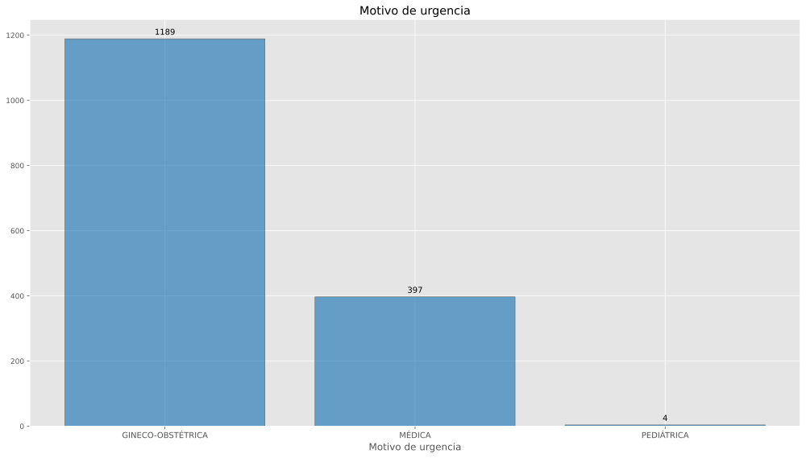
| Posición | Tipo de urgencia | Urgencias |
|---|---|---|
| 1 | URGENCIA NO CALIFICADA | 1183 |
| 2 | URGENCIA CALIFICADA | 407 |
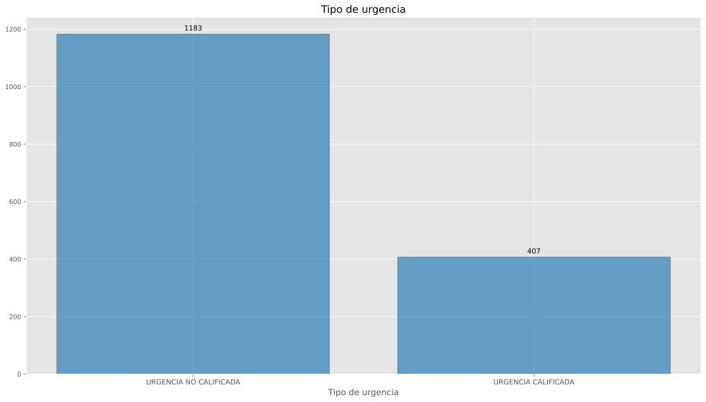
| Posición | Tipo de cama | Urgencias |
|---|---|---|
| 1 | SIN CAMA | 1226 |
| 2 | CAMA DE OBSERVACION | 361 |
| 3 | CAMA DE CHOQUE | 3 |
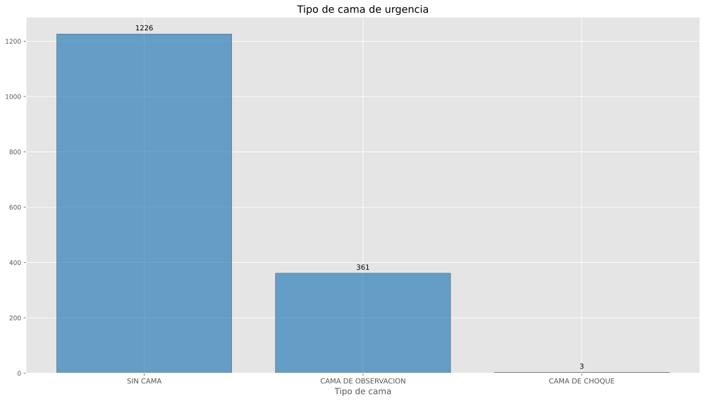
| Posición | Enviado a | Urgencias |
|---|---|---|
| 1 | DOMICILIO | 1050 |
| 2 | HOSPITALIZACIÓN | 401 |
| 3 | TRASLADO A OTRA UNIDAD | 72 |
| 4 | CONSULTA EXTERNA | 66 |
| 5 | SALE POR VOLUNTAD PROPIA | 1 |
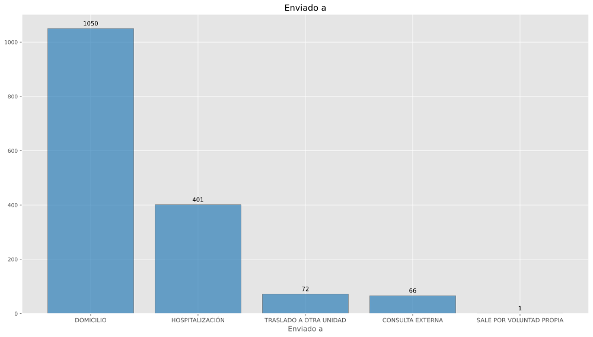
| Posición | Procedimiento de diagnóstico | Urgencias |
|---|---|---|
| 1 | ULTRASONOGRAFÍA DIAGNÓSTICA DEL ÚTERO GRÁVIDO | 560 |
| 2 | ULTRASONOGRAFÍA DIAGNÓSTICA DEL SISTEMA VASCULAR PERIFÉRICO | 1 |
| 3 | CONSULTA DESCRITA COMO LIMITADA | 1 |
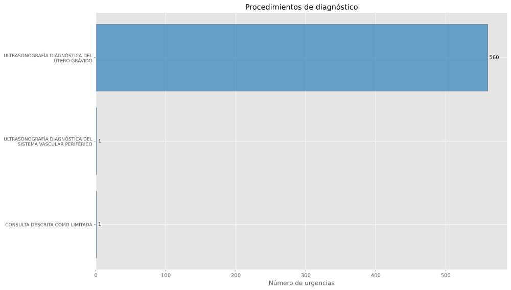
Descargar GRIMB000012.pdf